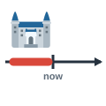
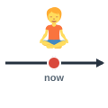
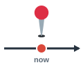
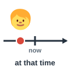
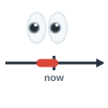
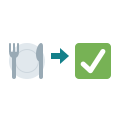
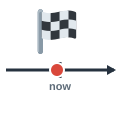
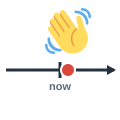
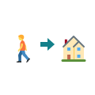
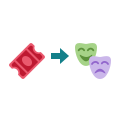

past
الماضي
Learn from the past.
تعلّم من الماضي.
Past, Present & Future
مرّر الماوس على السماعة أو اضغط عليها لتسمع النطق. السماعة الكبيرة نطق أمريكي (وهو المكتوب بالرموز)، وزر UK نطق بريطاني.

الماضي
Learn from the past.
تعلّم من الماضي.

الحاضر
Try to live in the present.
حاول أن تعيش الحاضر.
المستقبل
Nobody knows what the future holds.
لا أحد يعلم ما يخبئه المستقبل.
التاريخ (الأحداث الماضية)
The city has a long history.
للمدينة تاريخ طويل.

الآن
I have to go now.
عليّ أن أذهب الآن.
الآن تحديدًا
I'm busy right now.
أنا مشغول الآن.

حينئذٍ / ثم
I was living in Alexandria then.
كنت أعيش في الإسكندرية حينها.
في هذه الأيام
Nowadays, most people pay by phone.
يدفع معظم الناس بالهاتف في هذه الأيام.
حاليًا
She is currently working in Dubai.
تعمل حاليًا في دبي.
مؤخرًا
I recently changed my job.
غيّرت وظيفتي مؤخرًا.

في الآونة الأخيرة
Have you seen him lately?
هل رأيته في الآونة الأخيرة؟

بالفعل / من قبل
I've already eaten.
لقد أكلت بالفعل.
بعد / حتى الآن
Has the bus arrived yet?
هل وصلت الحافلة بعد؟
ما زال
It's still raining.
ما زالت تمطر.

للتو
I've just finished my work.
انتهيت من عملي للتو.
منذ (في الماضي)
I met her two years ago.
قابلتها قبل سنتين.
سابقًا
The hotel was formerly a palace.
كان الفندق قصرًا في السابق.
ذات مرة / مرة واحدة
I once lived in Paris.
عشت في باريس ذات مرة.

قريبًا
See you soon!
أراك قريبًا!
لاحقًا
I'll call you later.
سأتصل بك لاحقًا.
بعد قليل
The manager will be with you shortly.
سيكون المدير معك بعد قليل.

في نهاية المطاف
We eventually found the right house.
وجدنا في النهاية البيت المناسب.
فورًا
Please call me immediately.
من فضلك اتصل بي فورًا.
فجأة
Suddenly, the lights went out.
فجأة انطفأت الأنوار.
مبكرًا
I get up early on weekdays.
أستيقظ مبكرًا في أيام العمل.
متأخرًا
Sorry, I arrived late.
آسف، وصلت متأخرًا.

مقدَّمًا
Please book your seats in advance.
من فضلك احجز مقاعدك مقدَّمًا.
ستسمع كلمة من كلمات الصفحة، فاضغط على الصورة التي تعبر عنها.
الكلمات المميزة هي كلمات هذه الصفحة. اضغط على أي كلمة ليبدأ الصوت منها ويكمل ما بعدها.
Hi, Karim! I haven't seen you lately. What are you doing right now?
أهلًا يا كريم! لم أرك في الآونة الأخيرة. ماذا تفعل الآن تحديدًا؟
I'm currently working at a bank. I recently left the school where I was a teacher.
أعمل حاليًا في بنك. تركت مؤخرًا المدرسة التي كنت أعمل بها مدرسًا.
Really? I thought you loved history and teaching.
حقًا؟ ظننت أنك تحب التاريخ والتدريس.
I still do. But I was much younger then, and that was ten years ago. Nowadays I need a higher salary.
ما زلت أحبهما. لكنني كنت أصغر كثيرًا حينها، وكان ذلك قبل عشر سنوات. أما في هذه الأيام فأحتاج إلى راتب أعلى.
I understand. I once wanted to change my job too. Are you happy now?
أفهم ذلك. أردت أنا أيضًا تغيير عملي ذات مرة. هل أنت سعيد الآن؟
Yes, although the past was simpler. I try to enjoy the present and not worry about the future.
نعم، مع أن الماضي كان أبسط. أحاول الاستمتاع بالحاضر وعدم القلق بشأن المستقبل.
Have you found an apartment yet?
هل وجدت شقة بعد؟
I've just signed a contract! I've already paid the rent in advance.
وقّعت عقدًا للتو! ودفعت الإيجار مقدمًا بالفعل.
Congratulations! Is it near the old cinema?
مبارك! هل هي قريبة من السينما القديمة؟
Yes. The building was formerly a hotel. I move in soon, probably next month.
نعم. كان المبنى فندقًا في السابق. سأنتقل قريبًا، ربما الشهر القادم.
Oh, my phone! Suddenly everyone needs me. I'll call you later.
آه، هاتفي! فجأة صار الجميع يحتاجون إليّ. سأتصل بك لاحقًا.
Fine. Is it something serious?
حسنًا. هل الأمر جاد؟
My boss wants me immediately. The meeting starts shortly, and I can't be late.
مديري يريدني فورًا. يبدأ الاجتماع بعد قليل، ولا يمكنني أن أتأخر.
You always come early anyway. Go on, and eventually we'll have that coffee!
أنت تأتي مبكرًا دائمًا على أي حال. هيا اذهب، وفي النهاية سنشرب تلك القهوة!
الكلمات المميزة هي كلمات هذه الصفحة. اضغط على أي كلمة ليبدأ الصوت منها ويكمل ما بعدها.
My grandmother often talks about the past. She was formerly a nurse, and she loves telling the history of our family. She once told me about her first day at work, sixty years ago. She arrived late because of the rain, and suddenly a doctor called her and told her to come immediately. Then she knew that she had chosen the right job. Nowadays her life is much quieter. She is still healthy, although lately she has been walking more slowly. She has already raised four children, and she has just celebrated her ninetieth birthday. Recently, we asked her what she thinks about the present. She answered that people are currently too busy with their phones, and that right now she is happy simply because we are all with her. Has she told me all of her stories yet? I don't think so. This morning she got up early, because she wanted to pay for the next family dinner in advance. "I will rest later," she said. "My friends are coming shortly, and soon we will play cards." She always tells me not to fear the future, because eventually every problem passes. Now I try to live the same way.
تتحدث جدتي كثيرًا عن الماضي. كانت ممرضة في السابق، وتحب أن تروي تاريخ عائلتنا. وقد حدثتني ذات مرة عن يومها الأول في العمل، قبل ستين عامًا. وصلت متأخرة بسبب المطر، وفجأة ناداها طبيب وطلب منها الحضور فورًا. حينئذٍ عرفت أنها اختارت العمل المناسب. أما في هذه الأيام فحياتها أهدأ بكثير. ما زالت بصحة جيدة، مع أنها تمشي بتمهل في الآونة الأخيرة. وقد ربّت بالفعل أربعة أبناء، واحتفلت للتو بعيد ميلادها التسعين. وسألناها مؤخرًا عن رأيها في الحاضر. فأجابت بأن الناس حاليًا مشغولون أكثر من اللازم بهواتفهم، وأنها الآن تحديدًا سعيدة ببساطة لأننا جميعًا معها. هل حكت لي كل قصصها بعد؟ لا أظن ذلك. فقد استيقظت هذا الصباح مبكرًا، لأنها أرادت دفع ثمن عشاء العائلة القادم مقدمًا. قالت: «سأستريح لاحقًا. صديقاتي قادمات بعد قليل، وقريبًا سنلعب الورق». وهي تقول لي دائمًا ألا أخاف المستقبل، لأن كل مشكلة تمر في نهاية المطاف. والآن أحاول أن أعيش بالطريقة نفسها.